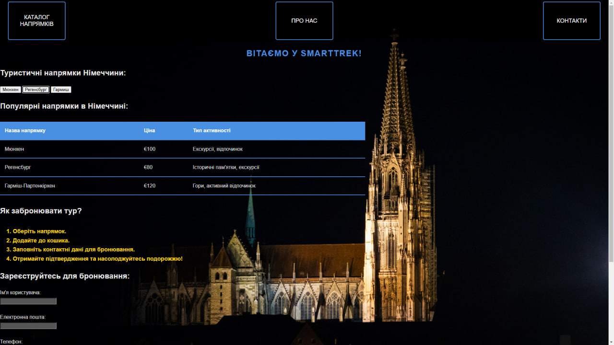
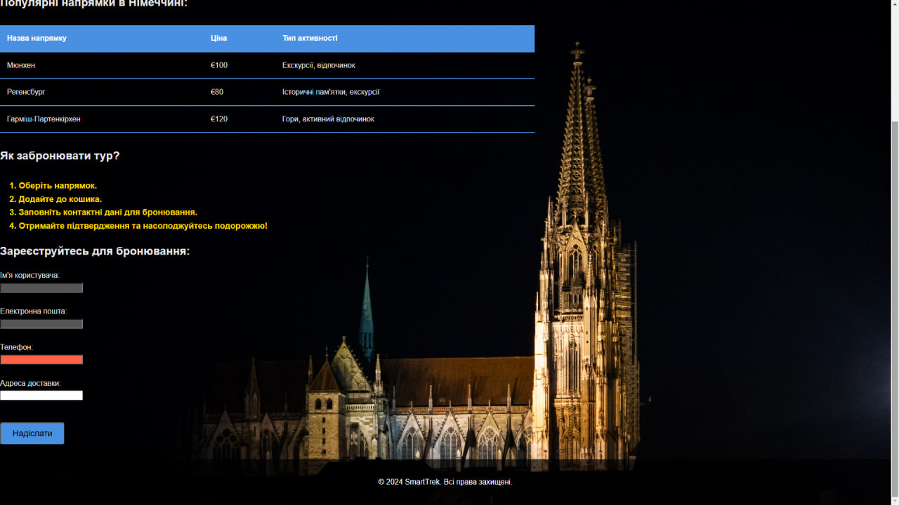

/* Теговий селектор для body */
body {
font-family: 'Roboto', sans-serif; /* Используем более современный шрифт */
background-image: url('back.jpg');
background-size: cover;
background-position: center;
background-attachment: fixed;
color: #E5E5E5;
margin: 0;
line-height: 1.6; /* Увеличиваем межстрочное расстояние для удобства чтения */
}
/* Класовий селектор для header */
.header {
background-color: rgba(0, 0, 0, 0.7); /* Темнее фон */
height: 130px;
display: flex;
align-items: center;
justify-content: space-between; /* Кнопки сдвигаем к правой части */
padding: 0 20px;
box-shadow: 0 4px 10px rgba(0, 0, 0, 0.3); /* Добавляем тень для эффекта */
}
/* Класовий селектор для кнопок в header */
.header .button {
background-color: rgba(0, 0, 0, 0.5); /* Темный фон с прозрачностью */
color: white;
border: 2px solid #4A90E2;
padding: 12px 25px;
margin: 5px;
cursor: pointer;
font-size: 18px;
border-radius: 5px;
text-transform: uppercase;
transition: all 0.3s ease;
background-size: cover; /* Для растягивания фона */
background-position: center; /* Центрируем изображение */
height: 120px; /* Устанавливаем высоту кнопки */
width: 180px; /* Устанавливаем ширину кнопки */
}
/* Кнопка для Мюнхена */
.header .button.munich {
background-image: url('munich.jpg'); /* Путь к изображению для Мюнхена */
}
/* Кнопка для Регенсбурга */
.header .button.regensburg {
background-image: url('regensburg.jpg'); /* Путь к изображению для Регенсбурга */
}
/* Кнопка для Гармиша */
.header .button.garmisch {
background-image: url('garmisch.jpg'); /* Путь к изображению для Гармиша */
}
/* Псевдоклассы для кнопок при наведении */
.header .button:hover {
background-color: #357ABD;
border-color: #357ABD;
transform: scale(1.1);
}
/* Псевдоклассы для кнопок при наведении (для отдельных кнопок) */
.header .button.munich:hover {
background-image: url('cities/Munchen.jpg'); /* Изменяем изображение при наведении для Мюнхена */
}
.header .button.regensburg:hover {
background-image: url('cities/Regensburg.jpg'); /* Изменяем изображение при наведении для Регенсбурга */
}
.header .button.garmisch:hover {
background-image: url('cities/Garmisch-Partenkirchen.jpg'); /* Изменяем изображение при наведении для Гармиша */
}
/* Идентификатор для формы отправки */
#booking-form-submit {
background-color: #4A90E2;
color: white;
cursor: pointer;
padding: 12px 25px;
border-radius: 5px;
transition: background-color 0.3s ease;
}
/* Псевдокласс для поля ввода, когда оно в фокусе */
input:focus {
outline: none;
border-color: #4A90E2;
box-shadow: 0 0 8px rgba(74, 144, 226, 0.6); /* Добавляем мягкую тень при фокусе */
}
/* Атрибутный селектор для полей формы с обязательным вводом */
input[required] {
background-color: #555;
}
/* Атрибутный селектор для поля ввода email, когда оно в фокусе */
input[type="email"]:focus {
background-color: #333;
border: 1px solid #4A90E2;
}
/* Теговий селектор для h1 */
h1 {
font-size: 26px; /* Увеличиваем размер заголовка */
color: #4A90E2;
text-align: center; /* Центрируем заголовок */
text-transform: uppercase; /* Заглавные буквы */
letter-spacing: 2px; /* Добавляем немного расстояния между буквами */
}
/* Класовий селектор для списков */
.destination-list {
list-style-type: circle;
margin-left: 20px;
color: #4A90E2;
}
/* Теговий селектор для таблицы */
table {
width: 60%; /* Увеличиваем ширину таблицы */
border-collapse: collapse;
margin-top: 30px;
margin-bottom: 30px;
}
/* Класовий селектор для ячеек таблицы */
.destination-table th, .destination-table td {
padding: 15px; /* Увеличиваем отступы */
text-align: left;
border-bottom: 2px solid #4A90E2; /* Линия под ячейками */
}
/* Класовий селектор для заголовков таблицы */
.destination-table th {
background-color: #4A90E2;
color: white;
}
/* Атрибутный селектор для полей ввода телефона, когда введен правильный номер */
input[type="tel"]:valid {
background-color: #7CFC00;
}
/* Атрибутный селектор для полей ввода телефона, когда введен неправильный номер */
input[type="tel"]:invalid {
background-color: #FF6347;
}
/* Класовий селектор для шагов бронирования */
.booking-steps {
margin-top: 30px;
color: #FFD700;
font-weight: bold;
font-size: 18px;
}
/* Идентификатор для текста подтверждения */
#confirmation-text {
font-size: 18px;
color: #FFD700;
text-align: center;
font-style: italic; /* Добавляем курсив для выделения */
}
/* Теговий селектор для footer */
footer {
background-color: rgba(0, 0, 0, 0.7); /* Темнее фон */
color: white;
padding: 20px;
text-align: center;
margin-top: 30px;
}
/* Комбинированный селектор для input и submit */
form input[type="submit"] {
margin-top: 20px;
background-color: #4A90E2;
cursor: pointer;
padding: 12px 25px;
border-radius: 5px;
font-size: 18px;
transition: background-color 0.3s ease;
}
/* Псевдокласс для кнопки при наведении */
form input[type="submit"]:hover {
background-color: #357ABD;
}